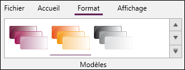
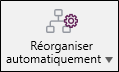
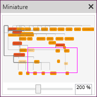
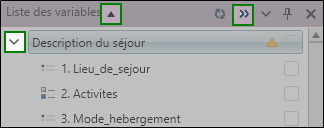

CONCEPTION DU QUESTIONNAIRE
La conception du questionnaire revient à définir et à paramétrer l'outil de collecte des données (questionnaire, guide d'entretien, grille d'observation...). Elle se déroule en quatre grandes étapes : la modélisation de l'étude, la rédaction du questionnaire, le paramétrage des contrôles ou des filtres, la définition des options de présentation ou de mise en forme.

-
La modélisation de l'étude consiste à schématiser celle-ci sous forme d'un diagramme permettant d'en synthétiser le contenu.
 MODÉLISER L’ÉTUDE
MODÉLISER L’ÉTUDE
L'environnement Modéliser mon étude permet d'élaborer un schéma synthétique de l'enquête. La modélisation en diagramme n'est pas une phase obligatoire mais elle est très utile lors de la première phase de l'enquête pour structurer les idées et les objectifs du projet. Elle facilite également les échanges entre les différentes parties prenantes de l'étude, en proposant le plan détaillé de l'enquête.
Comment y accéder ?
-
Depuis le panneau d'accueil, cliquez sur le stade Conception du questionnaire.
-
Depuis le bandeau Accueil, partie Accès directs, cliquez sur Diagramme.
ENVIRONNEMENT DE TRAVAIL
L'environnement est composé :
-
1 d'une zone de travail centrale ;
-
2 d'un ruban (bandeau) horizontal de trois onglets (Accueil, Format, et Affichage) ;
-
3 d'un explorateur latéral de trois fenêtres (Nouvel élément, Liste des variables, Langues) ;
-
La fenêtre Nouvel élément de l'explorateur comprend les objets nécessaires à la production du diagramme : partie, question, note ;
-
La fenêtre Liste des variables reprend les parties (ou sous-parties) et les questions qui ont préalablement été ajoutées à la zone de travail. La flèche présente en face de chaque partie permet de développer/réduire son contenu (afficher/masquer les questions qui la composent) ;
-
La fenêtre Langues permet de changer la langue de l'enquête affichée, dans le cas d'une enquête multilingue.
REMARQUE : Pour changer le nom d'un objet dans la zone de travail, cliquez sur le texte et saisissez le nouveau nom.
Même si cela n'est pas sa fonctionnalité première, l'environnement de la modélisation permet également de paramétrer les questions.
Pour cela, faites un clic droit sur une partie ou une question, puis sélectionnez Modifier.BANDEAU
Le bandeau de l'environnement Modéliser mon étude est composé de trois onglets (Accueil, Format, Affichage).
Accueil
L'onglet Accueil regroupe les fonctions les plus fréquemment utilisées dans l'environnement diagramme.
-
Le groupe Accès directs comprend des fonctions permettant d'ouvrir le panneau d'accueil ou d'autres environnements.
-
Le groupe Presse-papier propose les fonctions couper, copier, coller.
-
Le groupe Sélection permet de modifier les caractéristiques d'un objet sélectionné.
-
Le groupe Navigation donne la possibilité de définir des conditions d'affichage ou des renvois.
-
Le groupe Bibliothèque permet d'utiliser des questions prédéfinies.
-
Le groupe Outils comprend des fonctions permettant de transformer des questions en tableaux, de dissocier des objets ou de les grouper au sein d'une même partie, d'un même tableau...,
-
Le groupe Edition offre les fonctions de recherche, de remplacement et de suppression.
Format
L'onglet Format propose les fonctions permettant de personnaliser le schéma produit dans la zone de travail.

-
Le groupe Modèles permet de définir la couleur des éléments présents dans le diagramme.
Affichage
L'onglet Affichage propose un ensemble de fonctions permettant de mieux gérer le contenu de la zone de travail.
-
Le groupe Vue permet de masquer certains objets (par exemple masquer les questions pour ne garder que les titres de partie).
-
Le bouton Afficher/Masquer permet de choisir les éléments à afficher dans la zone de travail concernant les variables et les objets.
-
Le groupe Réorganiser offre trois options de présentation : organisation sous forme d'étoile, d'arbre vertical ou horizontal.
-
Le groupe Afficher permet de mettre en évidence une surface précise de la zone de travail (affichage de la miniature), et également d'afficher les langues dans l'explorateur et de naviguer d'une à l'autre (dans le cas d'une enquête multilingue).
-
Le groupe Zoom permet de changer la taille du schéma.
Accéder aux modes opératoires
Structurer le diagramme
L'étape de la modélisation de l'étude n'est pas obligatoire mais permet de structurer les idées et le contenu de l'étude via la mise en place d'une représentation graphique très parlante (diagramme). Pour ce faire, vous allez devoir créer des éléments (parties, questions), le but étant de réaliser un diagramme correspondant au plan du questionnaire.
Commencez par définir la structure générale de votre étude en créant les parties qui la composent. Pour cela, faites glisser l'objet Partie de l'explorateur (à gauche) vers la zone de travail. Pour développer les parties, ajoutez les sous-parties (éventuellement), et les questions en les faisant glisser de l'explorateur à la zone de travail. Toutefois, tâchez de les poser momentanément sur la partie à laquelle elles appartiennent pour créer un lien matériel entre les objets.
À chaque création d'un nouvel élément, il est nécessaire de le nommer. Pour cela, cliquez sur le texte par défaut écrit en blanc et renommez l'élément.
Une fois les parties et questions créées, le bouton « + » ou « - » (présent en haut à droit de chaque élément « partie ») permet de déplier ou replier la partie (afficher ou masquer les questions qui la composent).
Vous pouvez à tout moment intégrer des notes (pense-bête) destinées à recueillir des commentaires qui vous accompagneront tout au long de la conception.
Afin de structurer le questionnaire, il est important de savoir qu'une partie peut être reliée à une autre partie, elle devient alors une sous-partie ; une question peut être reliée à une partie ou une sous partie.
Pour relier deux éléments, faîtes glisser une question (ou une partie) sur la partie à laquelle vous souhaitez qu'elle soit reliée (une ombre verte apparaît pour signaler qu'un lien peut être créé). Déposez l'élément pour créer le lien.
La structure du questionnaire peut aussi être gérée via le panneau Liste des variables (à gauche de la zone de travail). Il est possible de hiérarchiser les parties et les questions les unes par rapport aux autres. Pour cela, il vous suffit de glisser et déposer un élément par rapport aux autres pour définir l'enchaînement logique de vos parties et questions.
REMARQUE : Par défaut, l'enchaînement du questionnaire est structuré dans l'ordre d'ajout des différents éléments, indépendamment de la réorganisation qui a pu être faite sur la zone de travail.
Gérer les éléments (grouper, transformer, dissocier)
Grouper
La fonction Grouper permet d'agréger plusieurs parties et / ou questions dans une nouvelle partie.
Grouper des éléments dans une partie
-
Sélectionnez les éléments à grouper.
-
Allez dans l'onglet Accueil, puis groupe Outils.
-
Cliquez sur Grouper, puis Dans une nouvelle partie.
Si les questions sélectionnées appartiennent déjà à une partie, la fonction Grouper crée une sous-partie. Les liens entre la partie existante et la nouvelle sous-partie sont créés automatiquement.
Grouper des questions dans un tableau
La fonction Grouper permet également d'agréger un ensemble de questions, partageant les mêmes modalités, dans un tableau de questions.
-
Sélectionnez les questions à regrouper en tableau.
-
Allez dans l'onglet Accueil, puis groupe Outils.
-
Cliquez sur Grouper, puis Dans un nouveau tableau.
Dissocier
La fonction Dissocier permet de retirer des questions d'une partie sélectionnée. Cette partie est donc supprimée et les questions qui la composent remontent d'un niveau dans la hiérarchie du questionnaire.
-
Sélectionnez la partie contenant les éléments à dissocier.
-
Allez dans l'onglet Accueil, puis groupe Outils.
-
Cliquez sur Dissocier.
La fonction Dissocier permet également de dissocier un tableau de questions. Les questions en ligne deviennent alors des questions à part entière, avec les mêmes modalités qu'elles partageaient dans le tableau.
Transformer
La fonction Transformer permet de convertir un élément en un autre élément. Un élément peut être transformé : En partie, En question, En tableau.
Transformer en partie
Cette fonction transforme une question en partie. Les modalités de la question deviennent alors des questions de la nouvelle partie créée.
-
Sélectionnez la question à transformer.
-
Allez dans l'onglet Accueil, puis groupe Outils.
-
Cliquez sur Transformer, puis En partie.
Vous pouvez également transformer un tableau de questions en partie. Dans ce cas, le libellé du tableau devient le libellé de la partie. Les questions en ligne deviennent des questions de la partie, avec les mêmes modalités qu'elles partageaient dans le tableau.
Transformer en question
Cette fonction permet de transformer une partie en question. Si la partie contient des questions, celles-ci deviennent les modalités de la nouvelle question créée.
-
Sélectionnez la partie à transformer.
-
Allez dans l'onglet Accueil, puis groupe Outils.
-
Cliquez sur Transformer, puis En question.
Transformer en tableau
Cette fonction permet de transformer une partie ou une question en tableau de question.
Lorsque vous transformez une partie en tableau de question, toutes les questions qui composent votre partie sont regroupées en ligne dans un tableau avec des modalités de réponses communes. Le libellé de la partie devient alors le libellé du tableau.
Lorsque vous transformez une question en tableau, le libellé de la question devient le libellé du tableau. Les modalités deviennent les questions en ligne avec des modalités par défaut ("Modalité 1", "Modalité 2").
-
Sélectionnez la partie ou question à transformer.
-
Allez dans l'onglet Accueil, puis groupe Outils.
-
Cliquez sur Transformer, puis En tableau.
Présenter le diagramme
Une fois les liens créés entre les éléments, un outil de réorganisation est disponible pour rendre la modélisation du questionnaire plus lisible. Les parties et questions peuvent être réorganisées de trois manières différentes : En étoile, En arbre horizontal, En arbre vertical.
-
Dans le bandeau, cliquez sur l'onglet Affichage.
-
Cliquez sur Réorganiser automatiquement.
-
Sélectionnez le type de réorganisation souhaité.

Utiliser la miniature
La miniature permet de visualiser rapidement l'ensemble du diagramme.
-
Dans le bandeau, cliquez sur l'onglet Affichage.
-
Cliquez sur Afficher la miniature.
L'échelle de zoom présente en bas de la miniature permet de régler plus rapidement le zoom souhaité pour la zone de travail (le zoom peut également être réglé à partir du bandeau, onglet Affichage).
Le rectangle rose quant à lui représente la vue active.

-
-
La rédaction du questionnaire revient à définir les questions à poser.
-
Le paramétrage des contrôles et des filtres consiste à définir le script (les scénarios de déroulement) du questionnaire.
-
La définition des options de présentation consiste à choisir le format visuel selon lequel seront affichés les composants du questionnaire (questions, tableaux, images, ...).


Après avoir défini le schéma de l'étude dans l'environnement de modélisation, il convient d'en détailler le contenu dans l'environnement de rédaction du questionnaire.
Comment y accéder ?
-
Depuis le panneau d'accueil.
-
Cliquez sur le stade Conception du questionnaire.
-
Puis Rédiger mon questionnaire.

L'environnement est composé :
-
D'une zone de travail centrale.
-
D'un ruban (bandeau) horizontal de huit onglets (Accueil, Insertion, Formulaires, , modèles, contrôles, diffusion, Langues, Affichage).
-
D'un explorateur latéral de quatre fenêtres (Plan, Liste des variables, Formulaires).
-
D'une modale permettant l’édition en temps réel de la présentation visuelle des objets (questions, texte, etc...).
Pour faciliter la gestion des éléments de l’enquête, Sphinx iQ3 propose désormais deux explorateurs complémentaires : un explorateur pour visualiser la liste des variables et un explorateur pour visualiser les pages du formulaire.
Pour basculer d’un explorateur à l’autre : dans l’explorateur latéral gauche, utilisez les onglets « Liste de variables » et « Plan du formulaire » suivants :

|
Liste des variables |
Plan du formulaire |
|---|---|
|
Vous permet de voir l’ensemble des variables (questions) composant votre enquête |
Vous permet de voir les questions présentes sur les pages votre formulaire |
|
Cette liste peut être agrandie dans la zone de travail grâce à la double flèche située en haut à droite de la fenêtre. Par ailleurs, la flèche située en haut à gauche de la fenêtre permet soit d'afficher uniquement les titres de parties, soit d'afficher les titres de parties et les questions qui s'y rapportent. En affichant uniquement les titres de parties, cela donne une vision globale et synthétique des questionnaires longs et en facilite la manipulation. Un affichage plus précis partie par partie peut être mis en place grâce à chacune des flèches présentes devant les titres de parties.
 |
Les avantages
|
|
Les points de vigilance :
|
|


La fenêtre Formulaires présente tous les questionnaires qui ont été créés, et permet de choisir celui sur lequel on souhaite travailler.
Boites de dialogue
Comment accéder à l'assistant :
-
Pour créer une nouvelle question (tableau) : dans l'onglet Insertion, cliquez sur le bouton Question ou Tableau.
-
Pour modifier une question (tableau) existante : dans la zone de travail, mettez le curseur sur l'objet Question et cliquez sur
 .
.
Cet assistant propose de créer une question ou un tableau et de définir ses paramètres.
-
L'onglet Définition permet d'indiquer le libellé de la question ou du tableau, le nom abrégé (nom de la variable), le libellé court (facultatif), le type de la question (des questions dans le cas d'un tableau) et les options complémentaires en fonction de ce dernier.

-
L'onglet Contrôles permet de masquer éventuellement la question ou le tableau dans un formulaire (l'intérêt de cette option réside dans la création de plusieurs formulaires qui n'ont pas la même structure). Il est également possible de mettre en place une condition de présentation permettant d'afficher la question / le tableau en fonction d'un profil donné.
Les options de présentation permettent de rendre la réponse obligatoire (le répondant ne pourra continuer la saisie tant qu'il n'aura pas répondu à la question), mettre en place un renvoi (sauter un ensemble de questions selon le profil choisi et passer directement à une autre question). Que la réponse soit obligatoire ou qu'elle fasse appel à un renvoi, il est possible de définir un message d'alerte personnalisé. Ce dernier permet soit d'informer le répondant sur l'obligation de répondre à la question, soit de l'informer qu'il va passer un ensemble de questions étant donné que son profil ne correspond pas.
Dans le cas d'une question fermée ou échelle, il est possible d'agir sur l'affichage des modalités, soit en mettant en place des conditions de présentation des modalités en fonction d'un profil, soit en établissant une rotation aléatoire des modalités. Dans une question fermée, les modalités de réponse proposées en première position ont plus de chances d'être choisies par les questionnés. La présentation aléatoire des modalités permet d'éviter cet «effet d'ancrage» et d'éliminer ainsi une source de biais potentielle.

-
L'onglet Analyse et calcul permet de calculer les variables et de traiter les modalités. Pour les questions fermées et échelles, il est proposé d'affecter des poids aux modalités et de les mettre en catégories.
-
L'option Définir un barème consiste à affecter une valeur numérique (un poids) qui permet au moment de l'analyse de traiter les échelles en nombres et de mettre en place des indicateurs (moyenne, score, etc.). Notez qu'il est possible, pour les tableaux de questions, d'affecter un barème différent pour chaque ligne.
-
La mise en catégories quant à elle sert à prévoir les classes dans lesquelles seront regroupées certaines modalités.
EXEMPLE :
''Boissons non alcoolisées'' pour l'eau, le jus de fruit, le thé, le café, etc.
Définir la variable comme automatique est utile lorsque l'on souhaite que la réponse soit identique à l'observation précédente.
Enfin, il est possible de mettre en place une variable calculée. Les calculs les plus courants sont la moyenne, la somme, la durée et l'âge. Pour plus d'informations sur la programmation des formules de calcul, se référer au langage de programmation en basic.
Notons que pour un tableau, seulement les options de traitement des modalités sont disponibles.
-
-
L'onglet Styles et Police permettent de définir la représentation visuelle, le contenu, la zone de saisie, la taille, la couleur et également l'espacement entre les lignes pour les tableaux. Ces onglets s'affichent désormais à droite du formulaire, ce qui vous permet d'effectuer une édition en temps réel de vos questions.
Accéder à la partie sur la modification des paramètres d'une question.